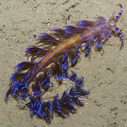
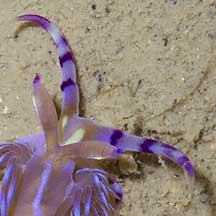
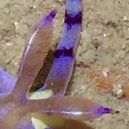
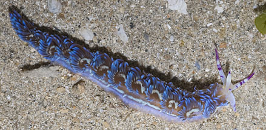
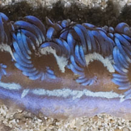
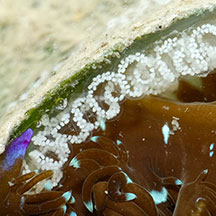
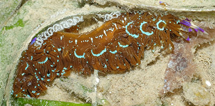

|
|
| nudibranchs text index | photo index |
| Phylum Mollusca > Class Gastropoda > sea slugs > Order Nudibranchia |
| Blue
dragon nudibranch Pteraeolidia ianthina Family Facelinidae updated Jun 2023 Where seen? This brilliant nudibranch is often seen on many of our shores, in coral rubble and near reefs. It is also commonly seen by divers. Features: 3-5cm. Long, narrow, soft body with finger-like projections (called cerata) arranged in hand-like clusters along the length of the body. Those encountered were mostly blue, sometimes also mostly brown with blue tipped cerata. Elsewhare, various colours are reported from yellow to green. It is identified by the purple bands on its long oral tentacles. It has a pair of shorter feathery rhinophores. A recent study suggests this species comprises a cryptic species complex, with what is currently perceived as a single species actually being multiple genetically-distinct species that look almost indistinguishable to the naked eye. |
 Beting Bronok, Aug 05 |
 Purple bands on oral tentacles. |
 Feathery rhinophores. |
|
 Pulau Sekudu, May 12 |
 Cerata in hand-like clusters |
|
 Laying egg string on seagrass. Lazarus (Eagle Bay), Nov 22 Photo shared by James Koh on facebook |
 Laying egg string on seagrass. Lazarus (Eagle Bay), Nov 22 Photo shared by James Koh on facebook |
| What does it eat? It eats hydroids. A large solitary hydroid, Ralpharia sp. is among the adult's
favourite food. Young ones have been seen among short 'turfing' hydroids.
The blue dragon nudibranch can also store symbiotic algae (zooxanthellae)
within its cerata and body. Here, the zooxanthellae get protection
and in turn provides the nudibranch with much of the nutrients produced
through photosynthesis. Young animals are white as they have yet to
develop their crop of zooxanthellae. Older ones may be brown. Adults
often can go without feeding for sometime, possibly living off the
nutrients provided by the zooxanthallae. Pteraeolidia species have a habit of staying near their eggs once they've laid them. Several individuals may stay near the eggs for several weeks. But it is not clear whether they are actually caring for their eggs. |
| Blue dragon nudibranchs on Singapore shores |
On wildsingapore
flickr
|
| Other sightings on Singapore shores |
Links
|